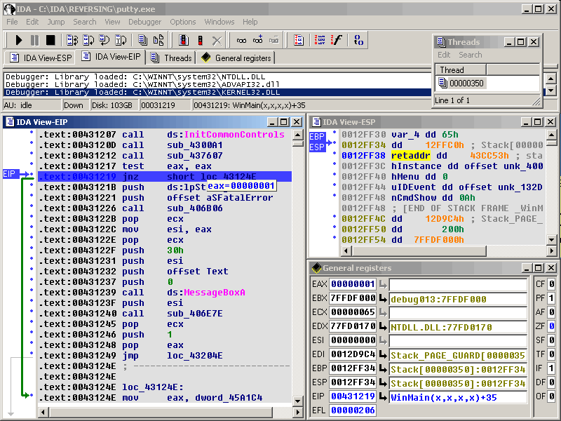
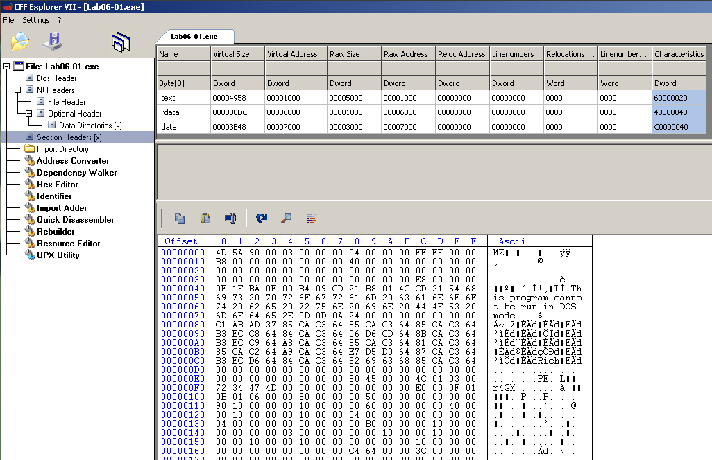
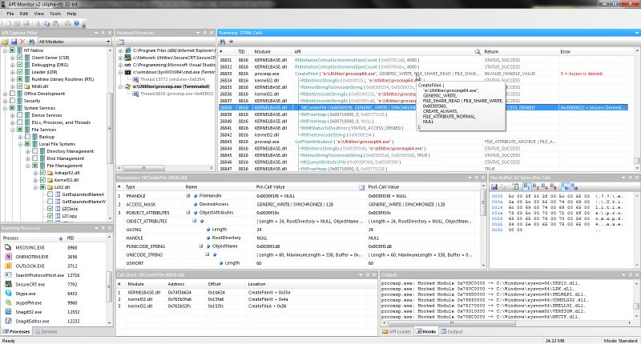

La ingeniería es la profesión involucrada en el diseño, fabricación, construcción y mantenimiento de productos, sistemas y estructuras. En un nivel superior, hay dos tipos de ingeniería: ingeniería avanzada e ingeniería inversa. La ingeniería avanzada es el proceso tradicional de pasar de abstracciones de alto nivel y diseños lógicos a la implementación física de un sistema. En algunas situaciones, puede haber una parte física sin ningún detalle técnico, como dibujos, listas de materiales o sin datos de ingeniería, como propiedades térmicas y eléctricas.
El proceso de duplicar un componente, subconjunto o producto existente sin la ayuda de dibujos, documentación o modelo de computadora se conoce como ingeniería inversa. La ingeniería inversa puede verse como el proceso de análisis de un sistema para: 1. Identificar los componentes del sistema y sus interrelaciones. 2. Cree representaciones del sistema en otra forma o en un nivel superior de abstracción. 3. Crear la representación física de ese sistema. La ingeniería inversa es muy común en campos tan diversos como ingeniería de software, entretenimiento, automotriz, productos de consumo, microchips, productos químicos, electrónica y diseños mecánicos. Por ejemplo, cuando una nueva máquina llega al mercado, los fabricantes de la competencia pueden comprar una máquina y desarmarla para saber cómo se construyó y cómo funciona. Una compañía química puede usar ingeniería inversa para vencer una patente en el proceso de fabricación de un competidor. En ingeniería civil, los diseños de puentes y edificios se copian de éxitos pasados, por lo que habrá menos posibilidades de fallas catastróficas. En ingeniería de software, un buen código fuente es a menudo una variación de otro buen código fuente.
La ingeniería inversa es exactamente lo que parece. En ingeniería avanzada, tiene una idea para una parte y construye los modelos. Luego produce la pieza utilizando esos modelos.
El primer paso en la ingeniería inversa de una parte es capturar los datos de la parte existente. Dependiendo del material y el tamaño de la pieza o instalación, se puede utilizar una variedad de diferentes equipos de escaneo. Utilizamos una variedad de tecnología para capturar datos, incluidos nuestros brazos Faro totalmente móviles y nuestro escáner láser Faro.
Ahora que tiene las dimensiones detalladas de la parte de los archivos escaneados, se pueden refinar en una parte final. Este proceso varía según el programa de software que se utiliza. Es una combinación del uso de tecnología automatizada dentro del software y la manipulación humana para completar el modelo. Convierten la nube de puntos o la malla que recibió del escáner en un modelo poligonal. La malla resultante se limpia, alisa y esculpe para retener su forma y precisión requeridas.
Ahora que el modelo está completo, está listo para ser fabricado. Dependiendo del tamaño de la pieza y la aplicación, puede optar por hacer una impresión del modelo para compararlo.
Hay tantas aplicaciones de software diferentes en el mundo moderno, y el código fuente de la mayoría de ellas está oculto a nuestra vista. Pero hay una serie de situaciones, cuando necesitamos comprender la lógica del funcionamiento de las plataformas y aplicaciones, sus algoritmos y detalles. Es entonces cuando se activa la reversión legal del software.
Hay muchos productos para facilitar esta tarea. Vamos a discutir algunos de los mejores programas de ingeniería inversa; principalmente serán herramientas de ingeniería inversa para Windows.
Es difícil nombrar la mejor herramienta de ingeniería inversa de software: hay bastantes y cada una resuelve alguna tarea específica del proceso de inversión de varios pasos.
IDA Pro debe ser una de las mejores herramientas de ingeniería inversa. Es un desensamblador interactivo, que se usa ampliamente para la reversión de software. Tiene el lenguaje de comando incorporado ( IDC ), admite varios formatos ejecutables para una variedad de procesadores y sistemas operativos. También tiene una gran cantidad de complementos que permiten ampliar aún más la funcionalidad del desensamblador.
CFF Explorer incluye: Editores PE y HEX Editor de recursos Editor de importación Escáner de firma Convertidor de direcciones Desensamblador Analizador de dependencia y más.
API Monitor es una aplicación que intercepta llamadas a funciones de API. Puede mostrar datos de entrada y salida. Por defecto, hay 10,000 funciones API y más de 600 interfaces COM habilitadas.
